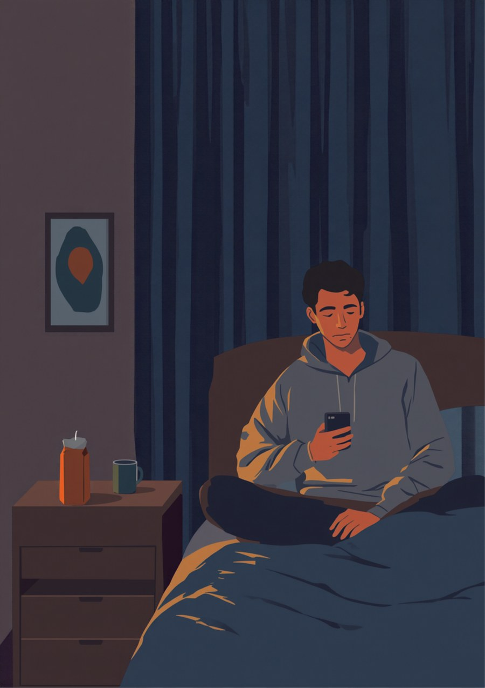
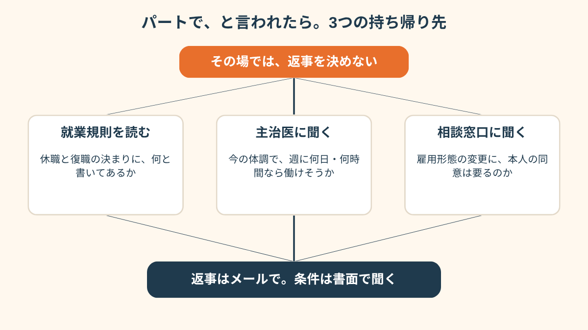
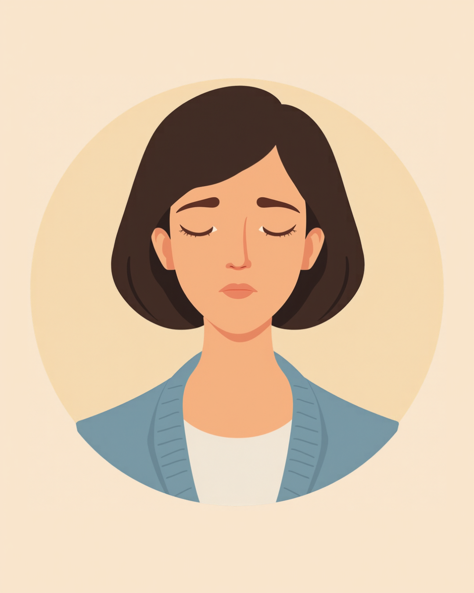
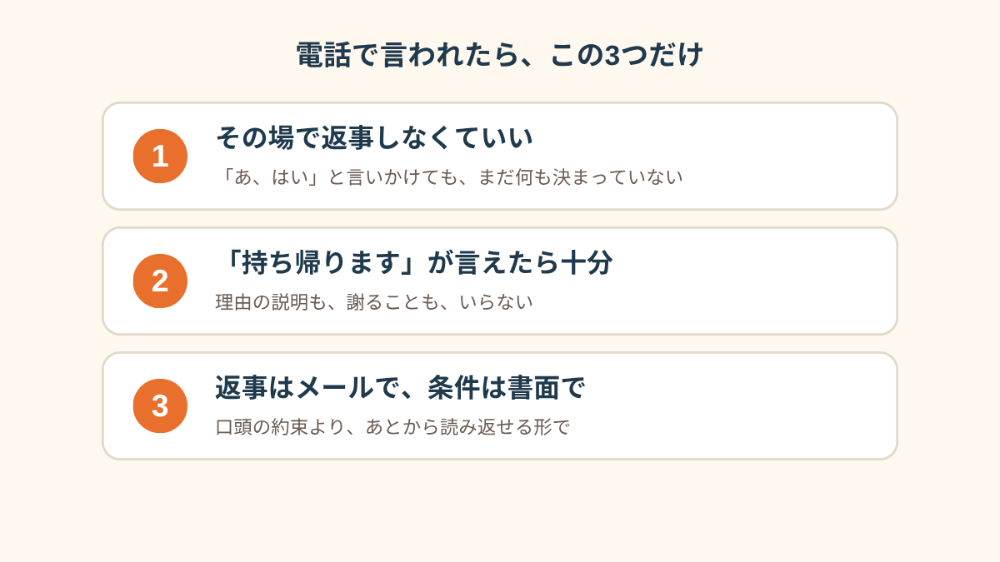

正社員のままだと、また体調を崩したときにお互い大変なので、パートで戻ってもらえませんか」
電話の向こうの人事の人は、たぶん、悪気なくそう言いました。
休職して8ヶ月。
私はその場で、「あ、はい」と言いかけていました。

平日の午後2時、知らない番号だった
去年の12月から休んでいて、傷病手当をもらいながら、なんとか生活してました。
朝は起きられる日と起きられない日が半々。
やっと「来月あたり、主治医に復職のこと聞いてみようかな」って思い始めた頃でした。
平日の午後2時。
画面に出たのは、登録してない番号。会社の代表番号だって、出てから気づきました。
最初の3分くらいは、ふつうの近況確認でした。
「体調どうですか」「はい、少しずつです」「それはよかった」。
このまま終わるのかなって思ったところで、声のトーンが、ちょっとだけ変わって。
「実は、これ以上休職が続くと、部署の体制的にも厳しくて。
復職してほしいんですけど、正社員だとまた体調が悪くなったときに困るので、パートという形で戻ってもらうのはどうでしょう」
どうでしょう、って。
聞かれてるのに、質問の形をした決定事項みたいに聞こえたんです。
私の耳には、そう聞こえた。実際どうだったかは、今でも分かりません。
「はい」と言いかけて、家賃の数字が浮かんだ
「あ、はい」の「あ」まで出てたと思います。
なんで「はい」なのか、自分でも分からない。
ただ、断ったら「戻る気がない人」になる気がして。それが、めちゃくちゃ怖かった。
で、次に頭に浮かんだのが、パートの時給×週の日数を、家賃で割る計算でした。
電話中に、ですよ。相手の話を聞きながら。
足りない。ぜんぜん足りない。
でも「足りません」とは言えなくて、「あ、えっと」を3回くらい繰り返してました。
そしたら、口が勝手に言ったんです。
「あの、一度、持ち帰って考えてもいいですか」。
自分で言っておいて、びっくりしました。
相手は「もちろんです。ただ、あまりお待たせはできないので、来週中には」って。
「来週中」という期限がついた瞬間、また胃のあたりがぎゅっとなりました。
電話を切ったあと、スマホの画面がいつ暗くなったのかも分かりません。

「上司から『復職するなら時短の契約社員に切り替えたほうが、お互い楽じゃない？』って言われたのは、休職して4ヶ月目でした。楽って、誰が楽なんだろうって思いながら、『考えます』って言って電話切って。そのあと2日間、ずっと『やっぱり私、戦力じゃないんだ』ってそればっかり。契約書とか就業規則とか、見る気力もなかったです。結局、最初に相談したのは友達でも家族でもなくて、ネットの匿名の掲示板でした。」
電話のあと、就業規則を開いた
電話を切ってから、3時間くらいベッドに座ってました。
夕方になって、なんとなく、会社のイントラで昔ダウンロードしたPDFがパソコンに残ってるのを思い出して。
就業規則です。入社したときに一回も読まなかったやつ。
休職の欄を探したら、思ったより短くて。
「勤続年数に応じて、最長〇ヶ月」みたいな一文と、復職の条件が3行くらい。
雇用形態を変えるなんて、どこにも書いてなかった。
……いや、書いてなかったのか、私が見つけられなかっただけなのか、その日は判断がつきませんでした。
次の日、主治医に話しました。
「今の体調で、週にどのくらいなら働けそうですか」って聞かれて、
その質問をされたのは、8ヶ月で初めてでした。
会社は「いつ戻れるか」しか聞かなかったし、私も「戻れます」以外の答えを持ってなかった。
「人事から『正社員のままだと席を確保できないから、契約社員で』って言われて、1週間くらい返事できなかったんです。ネットで調べたら、労働条件の変更は本人の同意が要るとか書いてあって、ああ、いきなり決められるものじゃないのかって、そこで初めて息ができた感じ。でも同時に、同意しないと『じゃあ戻れないね』って言われそうで、それも怖い。両方あるんですよ。ほっとしたのと、怖いのと。」

返事をしたのは、5日後のメールだった
結局、返事は電話じゃなくて、メールにしました。
文章は、3回書き直して。
「ご連絡ありがとうございます。復職については前向きに考えています。
ただ、雇用形態の変更については、主治医と相談中で、今すぐお答えできません。
復職後の働き方の条件を、書面で教えていただけますか」
送信ボタンを押す前に、お風呂で1回、声に出して読みました。
「すみません」は、ひとつも入れませんでした。
返事は、翌日の夕方に来ました。
「承知しました。ご状況が分かり次第、またご連絡ください」。
思ったより、あっさりしてて。
あの電話のとき、頭の中で作ってた「怒った人事」は、どこにもいませんでした。
それで丸く収まったかというと、そういう話でもなくて。
そのあとも復職の日程で何度かやりとりがあって、しんどい日はしんどかった。
ただ、「その場で決めなくていい」と、あの日の私に言ってあげたかったな、とは思います。

この記事に、聞いてみたいことはありますか？
「自分の場合はどうなんだろう」と思ったことを、気軽に書いてみてください。いただいた質問は個別にお返事したうえで、匿名で記事にすることがあります。